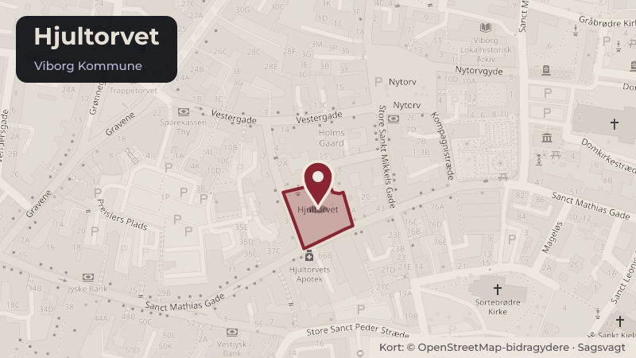

Besluttet 26. august, Økonomi- og Erhvervsudvalget, Viborg
Igangsætning af proces for fornyelse af Hjultorvet (bevillingssag)
Den strategiske udviklingsplan for Viborg midtby er vedtaget, og byrådet har besluttet at igangsætte en indsats for Hjultorvet. Udvalget skal nu godkende processen for fornyelsen af Hjultorvet.
Steder i sagen: Hjultorvet

Kort fortalt
- Forslaget
- Den beskrevne proces for fornyelse af Hjultorvet godkendes
- Udvalget beslutter, hvilket ambitionsniveau der skal danne grundlag for fornyelsen af
- Der gives en anlægsudgiftsbevilling på 750.000 kr. til kontoen ”Fornyelse af
Og 1 punkter mere i indstillingen herunder.
- Hvem
- Økonomi- og Erhvervsudvalget, Viborg Kommune
- Hvornår
- Onsdag 26. august 2026
- Status
- Besluttet. Økonomi- og Erhvervsudvalget anbefaler indstillingen fra Teknisk Udvalg, og beslutter samtidig at sagen indgår i den videre budgetlægning, så sagen forelægges byrådet i forbindelse med vedtagelse af budget 2027-2030. Lone Langballe Stine Damborg.
Læs hele sagen Kommunens egen tekst
Indstilling
Direktøren for Teknik og Miljø indstiller til udvalget,
1. at den beskrevne proces for fornyelse af Hjultorvet godkendes, og
2. at udvalget beslutter, hvilket ambitionsniveau der skal danne grundlag for fornyelsen af
Hjultorvet.
Direktøren for Teknik og Miljø foreslår endvidere, at Teknisk Udvalg indstiller til byrådet,
3. at der gives en anlægsudgiftsbevilling på 750.000 kr. til kontoen ”Fornyelse af
Hjultorvet” med rådighedsbeløb på 100.000 kr. i 2026 og 650.000 kr. i 2027, og
4. at udgiften på 750.000 kr. finansieres af det afsatte rådighedsbeløb på kontoen ”Pulje
til realisering af midtbyplan fra 2027 og frem” med 100.000 kr. i 2026 og 650.000 kr. i
Behandling i Teknisk Udvalg 12. august 2026
Tekniks Udvalg besluttede,
1. at godkende den beskrevne proces for fornyelse af Hjultorvet, og
2. at scenarie B danner grundlag for fornyelsen af Hjultorvet og at udgifter til arkæologi
søges minimeret
Teknisk Udvalg indstiller desuden til byrådet,
3. at der gives en anlægsudgiftsbevilling på 750.000 kr. til kontoen ”Fornyelse af
Hjultorvet” med rådighedsbeløb på 100.000 kr. i 2026 og 650.000 kr. i 2027, og
4. at udgiften på 750.000 kr. finansieres af det afsatte rådighedsbeløb på kontoen ”Pulje
til realisering af midtbyplan fra 2027 og frem” med 100.000 kr. i 2026 og 650.000 kr. i
Sagsfremstilling
Historik
Byrådet besluttede i oktober 2025 at igangsætte en proces for forbedring af Hjultorvet og
afsatte midler hertil (link til sag nr. 14 på byrådets møde den 8. oktober 2025 ). Der er siden
etableret tre nye byrumsmøbler, der skaber mulighed for nye aktiviteter. Den nuværende
indretning fremgår af bilag 1.
Byrådet vedtog i august 2025 endeligt den strategiske udviklingsplan for Viborg midtby ( link til
sag nr. 8 på byrådets møde den 27. august 2025). I planen indgår forslag om fornyelse af
Hjultorvet.
Kort over Hjultorvet og St. Hjultorvgyde er i bilag 2.
Strategisk udviklingsplan for Viborg midtby kan ses her.
Teknisk Udvalg fik i 2017 udarbejdet to idéskitser med forslag til indretning af Hjultorvet ( link til
sag nr. 9 på Teknisk Udvalgs møde den 30. august 2017), som er i bilag 3. Skitserne blev
udarbejdet som led i politiske drøftelser om torvets funktion, indhold og arkitektoniske udtryk
efter afholdelse af en debatfase.
Inddragelse og høring
I forbindelse med udviklingsplanen for Viborg Midtby er der gennemført en større inddragelse,
herunder to høringer, hvor der er kommet forslag til indretning og anvendelse af Hjultorvet,
som kan indgå i det videre arbejde. Tidligere høringssvar er i bilag 4. I høringssvarene
beskrives Hjultorvet overordnet som nedslidt og med uudnyttede potentialer, og der peges på
et ønske om at udvikle torvet til et levende samlingspunkt med mulighed for ophold, aktiviteter
og leg.
I processen med at designe nye byrumsmøbler har de erhvervsdrivende omkring Hjultorvet
været inddraget. De har bidraget med input til testfunktioner, herunder leg, scene, beplantning
og uformelt ophold, samt til materialevalg, der kan harmonere med deres eget møblement til
udeservering. De erhvervsdrivende udtrykker desuden ønske om bedre forhold for
udeservering og et mere sammenhængende udtryk.
Midtbyrådet har tidligere drøftet de fremtidige muligheder for Hjultorvet. På mødet den 18. juni
blev Midtbyrådet præsenteret for scenarie A og scenarie B, og input fra dette møde er
opsummeret i bilag 5.
Beskrivelse
Forvaltningen anbefaler, at der gennemføres en arkitektkonkurrence for en fornyelse af
Hjultorvet og St. Hjultorvgyde. En arkitektkonkurrence vil sikre et solidt og ambitiøst grundlag
for den videre udvikling og give mulighed for at arbejde med forskellige helhedsorienterede
løsningsforslag, der kan afspejle Hjultorvets centrale betydning i Viborg midtby.
Gennemførelse af arkitektkonkurrencen forudsætter, at der afsættes midler til
konkurrenceprogram, honorering, bedømmelsesproces, borgerinddragelse og kommunikation.
Det foreslås på den baggrund at give en bevilling på 750.000 kr. til arkitektkonkurrencen og
den indledende proces. Beløbet påvirkes ikke af valg af ambitionsniveau.
Fremtidens Hjultorv
Det er nødvendigt at få fastlagt ambitionsniveau for fornyelsen af Hjultorv, inden
arkitektkonkurrencen kan igangsættes.
Der er opstillet to scenarier (A og B), som repræsenterer henholdsvis en mere begrænset og
en mere omfattende fornyelse, jf. bilag 6. Scenarierne er videreudviklet med afsæt i de to
idéskitser, der blev udarbejdet i 2017, jf. bilag 3. Fælles for begge scenarier er, at indretningen
tager udgangspunkt i udeservering langs facaderne og aktiviteter på torvets centrale del, som
fremgår af diagram i bilag 7.
Scenarie A – Begrænset omdannelse – eksisterende terræn
Scenariet tager udgangspunkt i en enkel og omkostningsbevidst fornyelse,
hvor torvet efter fjernelse af kirkeskulpturen genetableres med et jævnt
skrånende terræn. Der etableres nyt inventar og plantekummer med
begrænset beplantning inden for de nuværende rammer og som
udgangspunkt med meget begrænsede nedgravninger.
Scenarie B – Gennemgribende omdannelse - terrænregulering
Scenariet tager udgangspunkt i en helhedsorienteret og ambitiøs fornyelse,
der kan omfatte terrænregulering, nyt aktivitetsområde og en større
byrumsmæssig bearbejdning, herunder fx større plantebede, træer, kunst,
vandelementer og ny belysning.
Scenarie A
Scenarie B
Anlægsøkonomi: Ca. 12 mio. kr.
Karakteristika:
Kan omfatte:
Ca. 24 mio. kr.
Begrænset fysisk
omdannelse
Gennemgribende fysisk
omdannelse
Fokus på nødvendige
forbedringer
En samlet og langsigtet løsning
Genbrugt belægning i ny
disponering
Genbrugt belægning - ny
disponering
Fjernelse af kirkeskulptur
Fjernelse af kirkeskulptur
Nyt inventar
Nyt inventar
Plantekummer
Større plantebede med træer,
buske og tæt beplantning
Uændret terræn med
eksisterende hældning
Aktivitetsområde
Terrænregulering, fx plateauer
Ny og tilpasset belysning
Arkæologi
Udgifter til arkæologisk arbejde indgår ikke i scenarierne. Da der er
konstateret spor af kirkegård på store dele af torvet, må der forventes
udgifter til arkæologiske undersøgelser og eventuelle udgravninger. Torvet
omfatter både udgravede og ikke-udgravede områder, og selv om ny
indretning søges placeret i udgravede arealer, vil ikke-udgravede områder
sandsynligvis også blive berørt af fx ledningsarbejde og beplantning.
Da udgifterne til arkæologi afhænger af torvets fremtidige design, omfang, gravedybder mm,
kan Viborg Museum ikke på nuværende tidspunkt udarbejde et konkret overslag. Der er endnu
ikke lavet en arkæologisk forundersøgelse, der kan understøtte overslaget.
Der er udarbejdet to overslag ud fra fiktive scenarier på baggrund af bl.a. viden fra tidligere
udgravninger om tæthed af grave/fund. I overslagene er afsat poster til forundersøgelse,
overvågning af arbejder samt 30% til uforudsete omkostninger.
Udgifterne til arkæologi afhænger af, hvor meget der skal udgraves. Hvis der udgraves ca. 100
kvm til terrænregulering, kabler, lysmaster, inventar mv. kan der forventes en udgift på ca. 5
mio. kroner. Hvis der udgraves ca. 180 kvm samt plantehuller til 2 træer (på ikke udgravede
arealer) så forventes en udgift på ca. 12,0 mio. kroner.
Overslagene er behæftet med stor usikkerhed og er alene en indikation på et muligt
udgiftsniveau på nuværende stadie.
Proces
Hjultorvet er et af Viborgs vigtigste byrum og mødesteder. Forvaltningen foreslår derfor, at der
gennemføres en arkitektkonkurrence, som skal danne grundlag for en samlet plan for
fornyelsen af Hjultorvet og St. Hjultorvgyde.
Processen indledes med borgerinddragelse med henblik på at få input til konkurrencens
rammer. Der nedsættes en følgegruppe med repræsentanter for naboer og erhvervsdrivende
på torvet samt repræsentanter fra midtbyrådet. Efterfølgende kan udvalget drøfte centrale
spørgsmål omkring torvets fornyelse og resultatet af borgerinddragelsen. På baggrund heraf
udarbejdes et program for konkurrencen, som forelægges udvalget til godkendelse.
Konkurrencen gennemføres i 2027, og forvaltningen foreslår, at den afgøres af en
dommerkomité med politisk repræsentation. Dommerkomité vælges ved godkendelse af
program. Herefter kan vinderforslaget danne grundlag for den videre bearbejdning, herunder
projektering og anlæg.
Økonomi
Processen for arkitektkonkurrencen forventes at koste 750.000 kr., fordelt således:
Rådgivning (sekretariat, program, præmier): 675.000 kr.
Borgerinddragelse: 75.000 kr.
Byrådet har i anlægsbudget 2025 – 2028 afsat:
’Pulje til realisering af midtbyplan fra 2027 og frem’
1,0 mio. kr.
9,4 mio. kr.
10,4 mio. kr.
Byrådet bevilgede på møde i april 2026 0,4 mio. kr. heraf til den indledende proces omkring
fornyelse af Trappetorvet og Gravene samt 0,5 mio. kr. på mødet i juni 2026 til wayfinding. Der
er således 0,1 mio. kr. tilbage i puljen i 2026 og et samlet restbudget på 19,9 mio. kr.
Forvaltningen foreslår at der gives en anlægsudgiftsbevilling på 100.000 kr. i 2026 og 650.000
kr. i 2027 til dækning af udgifter til borgerinddragelse og arkitektkonkurrencen. Der vil herefter
være et restbudget på 19,15 mio. kr.
Som fremlagt af scenarie A og B skønnes det, at fornyelsen af Hjultorvet kan realiseres for en
anlægssum på mellem 12 og 24 mio. kr. + 5-12 mio. kr. til arkæologi. Udgifter til drift vil
afhænge af den konkrete løsning.
Alternativer
Intet.
Tidsperspektiv
Der er følgende overordnede tidsplan:
Aktivitet/år
Inventar - mindre forbedringer af torvet
X
X
X
Inddragelse af borgere og interessenter
X
X
Arkitektkonkurrence om fornyelsen
X
X
Projektering og udbud af scenarie
Anlæg af scenarie og evt. udgravning
X
X
X
Økonomiske forhold og konsekvenser
Der har været dialog med Sparekassen Danmark, som har tilkendegivet interesse i at bidrage
til realisering af et en del af Hjultorvet fx et specifikt element på torvet. Et eventuelt bidrag
forventes ikke at udgøre en væsentlig del af den samlede anlægsøkonomi.
Juridiske og planmæssige forhold
Intet.
Beslutning
Økonomi- og Erhvervsudvalget anbefaler indstillingen fra Teknisk Udvalg, og beslutter
samtidig at sagen indgår i den videre budgetlægning, så sagen forelægges byrådet i
forbindelse med vedtagelse af budget 2027-2030.
Fraværende:
Lone Langballe
Stine Damborg
Kilde: Viborg Kommune, Økonomi- og Erhvervsudvalget, referat fra mødet onsdag 26. august 2026, punkt 8. Læs den originale sag hos kommunen.